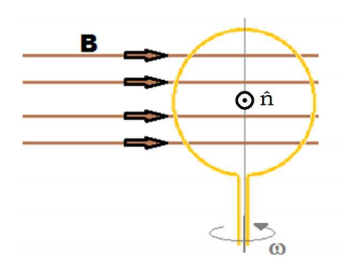
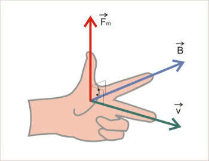
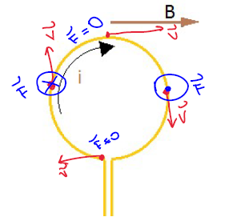
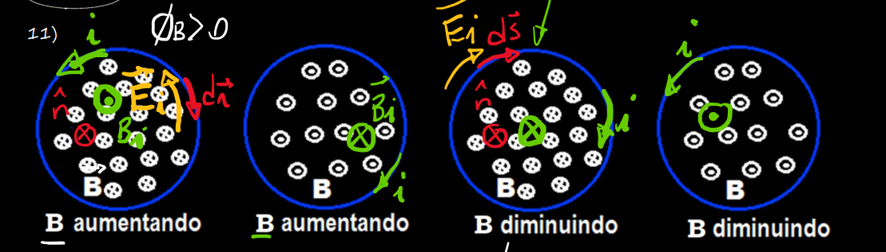
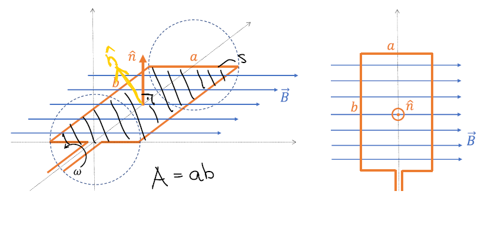

Indução Eletromagnética
Fluxo Magnético
Nas aulas passadas vimos a segunda lei de Maxwell:
\(\phi_{B} = \oint \vec{B} \cdot \hat{n} dA = BA\)
No caso de uma bobina chata de N espiras, temos: \(N\cdot \oint \vec{B} \cdot \hat{n} dA = NBA\)
No caso de uma bobina chata de N espiras, temos: \(N\cdot \oint \vec{B} \cdot \hat{n} dA = NBA\)
Com B uniforme na área
Em uma bobina com N voltas e área A girando loucamente com velocidade constante w,

temos:
\(\phi_{0} = \int \vec{B}\cdot\vec{n}dA\)
$ \phi_{0} = \int\vec{B}\cos(\alpha) dA = BA\cdot\cos(\alpha)$
\(\phi_{0} = BAcos(\frac{\pi}{2} - wt)=BAsen(wt)\)
\(\frac{d\phi_{0}}{dt} = BAwcos(wt)\)
Forças e Fluxos
Pra marcar as forças numa bobina girando, podemos usar a regra da mão esquerda:

No caso o vetor velocidade é na mesma direção em sentido que a corrente. Nos pontos onde os vetores velocidade e campo magnético forem paralelos, não existe força. Por isso que ela gira, pq fica com uma força de um lado apontando pra cima, uma força em outro lado apontando pra baixo, e aí vrooom

Indução Eletromangnética
A 3ª equação de Maxwell, aka lei de Faraday, que calcula a força eletromotriz
\(\oint \vec{E}\cdot d\vec{r} = - \frac{d\phi_{B}}{dt} = e\)
Quando o fluxo aumenta, a força eletromotriz gerada tem o sentido de criar uma corrente que gera um campo de modo a diminuir o fluxo. Quando o fluxo diminui, surge uma força eletromotriz no sentido de gerar uuma corrente que gere um campo de modo a aumentar o fluxo.
O "sentido" da força eletromotriz nos condutores circulares (espiras fechadas):

(essa imagem é importante apreciem ela tá)
\(\int_{A}^B \vec{E_{i}} d\vec{r} \simeq e\)
Conversão de Energia
Quando fazemos uma bobina girar em torno de um dos seus eixos de simetria, imerso em uma região onde há campo magnético, temos um gerador elétrico. Com a seguinte bobina de N voltas:

Temos o seguinte fluxo magnético:
\(\phi_{B} = - NBAsen(wt)\)
Conectando uma lâmpada de resistência R constante aos contatores da bobina, temos as seguintes corrente e tensão:
\(e = - \frac{d\phi_{B}}{dt}\)
\(-\frac{d\phi_{B}}{dt} = NBAwcos(wt) = e\)
\(i = \frac{e}{R} = \frac{NBAwcos(wt)}{R}\)
O torque da força eletromagnética gerada é:
\(\vec{\tau_{F}} = \vec{r} \times \vec{F}\)
\(\vec{\tau_{F}} = NBiAcos(wt)\)
\(\vec{\tau_{F}} \cdot w = i\cdot e\)
As forças eletromagnéticas que surgem são no sentido de desacelerar a bobina, e permanecem constantes:
\(F = NBiL\)